The Dating and Provenance of Valencia 835: A Suggested Revision
Ronald Woodley (Birmingham Conservatoire, Birmingham City University, UK)
The manuscript Universitat de València, Biblioteca Històrica, MS 835 (henceforth V) is one of the central sources for our work on this new online Tinctoris edition, and for our ongoing research into the historical and textual interrelationships of the surviving fifteenth-century witnesses to Tinctoris’s writings. The manuscript has become especially familiar to modern musicology because of its superb architectural frontispiece (fol. 2) that incorporates the now famous ‘portrait’ miniature of the author seated in a study, after the iconographical manner of St Jerome, presumably in the Castel Nuovo in Naples, reading a manuscript clearly depicting – albeit somewhat schematically – musical notation. The portrait, now widely disseminated in the modern musicological literature, is shown on the front page of this online project; the full frontispiece, into which is incorporated the opening of Tinctoris’s Expositio manus, is shown here as Figure 1.
Figure 1. Valencia, Universitat de València, Biblioteca Històrica, MS 835, fol. 2r
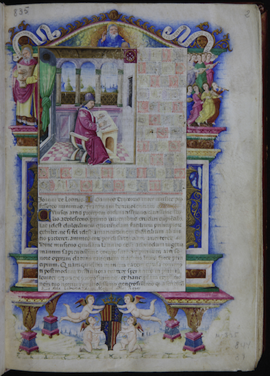
Although the portrait of the author certainly still merits much more detailed research, the focus of the present short essay is rather on the lower part of the frontispiece, displaying the armorial shield with its various component parts and decoration, and on the implications of these for the manuscript’s precise dating and provenance. It has long been recognized that the arms depicted are those of the royal House of Aragon: this has been acknowledged in modern scholarship at least from the early twentieth century, in the 1913 catalogue of the manuscripts of the Valencia University Library by Gutiérrez del Caño (Gutiérrez del Caño 1913, iii. 234–5), and later, especially, the monumental multi-volume work of Tammaro de Marinis on the Aragonese royal library at Naples in the fifteenth and early sixteenth centuries (De Marinis 1947–69, esp. ii. 164–5). In the musicological literature, aside from a few references en passant, the manuscript rose to major prominence in Tinctoris studies with the pioneering work of Leeman Perkins, as part of his collaborative edition, with Howard Garey, of the Mellon Chansonier (Perkins & Garey 1979, esp. i. 22–26). Up until the 1990s the assumption – sometimes stated, sometimes implicit – was that the Aragonese arms of the frontispiece (Type 15 of De Marinis’s taxonomy: De Marinis 1947–69, ii. Plate B), together with its surmounted five-point ‘lily crown’, indicated that the manuscript – a work of undoubtedly very high prestige and luxury, uncommon for music theory at the time – had been executed for King Ferrante, Tinctoris’s direct employer, himself.
In 1997 a significant revision to this presumed provenance was offered by Thomas Haffner in a monograph devoted to the library of one of Ferrante’s sons, Giovanni d’Aragona (1456–1485), who became Cardinal of Naples in December 1477, and was renowned for his book collecting and cultural aspirations (Haffner 1997). Crucially, Haffner observed for the first time – though now it seems glaringly obvious – that the five-pointed crown surmounting the Aragonese arms on the frontispiece of V shows clear signs of overpainting.
Figure 2. Valencia, Universitat de València, Biblioteca Històrica, MS 835, fol. 2r (detail)
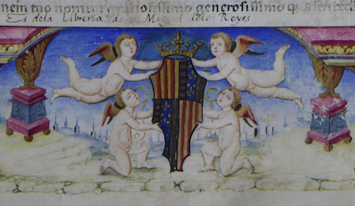
By analogy with a number of other Aragonese manuscripts displaying similar overpaintings, and clearly linked with the library of Giovanni d’Aragona, Haffner proposed that the image originally painted in this location was most likely that of the cardinal’s red hat, demonstrating that the Tinctoris manuscript must have been executed primarily for Giovanni himself, rather than Ferrante (Haffner 1997, 315–19; Catalogue No. 34). For musicologists, this was in many ways an attractive proposition, partly because it opened up a rather richer landscape of cultural and bibliophilic relationships at the Neapolitan court, and partly because it seemed to demonstrate that Tinctoris’s musical, and perhaps pedagogical, relationships with Ferrante’s offspring were more widely shared than simply with the king’s daughter Beatrice, whose status as dedicatee and probable student of the theorist is well attested. Most of all, though, the ascription of V to the library of Giovanni d’Aragona held important implications for the manuscript’s dating. Since Giovanni died on 17 October 1485, and as already stated had become cardinal at the end of 1477, the proposed provenance enabled codicologists, and hence musicologists, to narrow the window for the compilation of the manuscript to this period of under eight years, within which Haffner settles on a date of c. 1483. This provenance and dating were once more taken up, in the year following publication of Haffner’s monograph, by Gennaro Toscano in the most detailed research on the Aragonese royal library at Naples undertaken since De Marinis, published in parallel with the exhibition ‘La Biblioteca Reale di Napoli al tempo della dinastia aragonese’, held in the Castel Nuovo from 30 September to 15 December 1998 (Toscano 1998). Among the wide-ranging and impressive art-historical research contained in this volume is the observation that the frontispiece of V now seems securely attributable to Nardo Rapicano, a refinement of previous suggestions involving another member of the same family (father?), Cola (for example, Woodley 1982, i. 131, following discussions with the Italian Renaissance manuscript specialist A. C. de la Mare), as well as other known Neapolitan court illuminators of the late fifteenth century, such as Cristoforo Majorana and Matteo Felice (for example, Perkins & Garey 1979, i. 22–6).
There are, however, at least two serious obstacles to the assertion that the overpainting of the crown above the Aragonese arms of V (Figure 2) conceals an original depiction of a cardinal’s hat. The first such obstacle is purely iconographical, since an intrinsic part of a cardinal’s emblem, in contexts such as this, is the incorporation of the red fiocchi or series of knotted tassles that conventionally hang down from either side of the hat. An instance of this, in the frontispiece of Valencia MS 390 (Albertus Magnus, Summa theologie, sive De mirabili scientia Dei), a manuscript identified as belonging to Giovanni d’Aragona as early as 1527 in an inventory of Neapolitan manuscripts then in Ferrara (Cherchi & De Robertis 1990, 161, No. 57), is shown in Figure 3.
Figure 3. Valencia, Universitat de València, Biblioteca Històrica, MS 390, fol. 1r (detail)
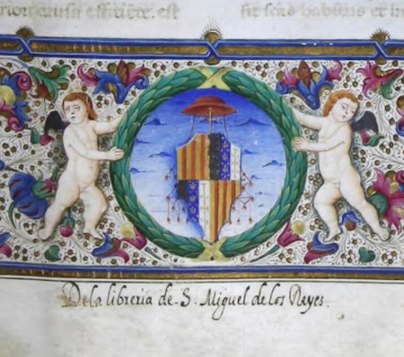
In this example there is in fact rather more distance between the hat and the fiocchi than is customary, as can be seen by comparison with Figure 4 (Rouen, Bibliothèque municipale, MS A 13: Leonardo Nogarola, Tractatus de mundi eternitate, a book dedicated to Giovanni d’Aragona and dated 13 April 1485, only six months before Giovanni’s death). Similar designs can also be found in a number of greyscale images from manuscripts associated with Giovanni, reproduced by Haffner (Haffner 1997, e.g. Appendix No. 51, from Naples, Archivio di Stato, Museo Storico, MS 99.C.1, fol. 17).
Figure 4. Rouen, Bibliothèque municipale, MS A 13, fol 3r (detail)
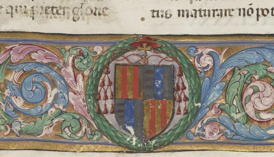
If we turn again to V (Figure 2), close inspection reveals that the overpainting is restricted to the immediate area of the crown, between the heads of the two upper putti, perhaps with a little re-contouring or touching-up of the putti’s rearmost arms. In addition, the purely decorative (i.e. non-emblematic) gold ribbons that curl down between the pairs of putti and the shield show no sign of interference or repainting, this despite the very small horizontal (accidental?) patch between the arms of the upper right putto, probably in the same pigment as the main overpainting above. There is, in short, no trace whatever of any pre-existing fiocchi that might have (indeed, should have) been hanging down either side of the shield, had there been a cardinal’s emblem depicted.
The second obstacle to the argument favouring an original image of a cardinal’s hat concerns the show-through from this area of the frontispiece on fol. 2 recto to the corresponding area of fol. 2 verso. Unlike some Aragonese manuscripts, in which the scribe or atelier has recognized the problems of staining sometimes caused by show-through from elaborate frontispieces, resulting in an extra sheet of vellum being pasted on to the verso before the main text there was written, the show-through of V is quite apparent (Figure 5).
Figure 5. Valencia, Universitat de València, Biblioteca Històrica, MS 835, fol. 2v (detail)
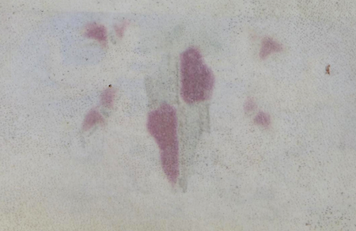
The crucial thing to observe here is that, whilst there is noticeable leaching of the red pigment from the ground of the red and gold Aragonese pali, and from the putti’s wings, through to the verso of the leaf, the only slight coloration of the area corresponding to the crown on the recto is of a greyish hue, similar to that corresponding to the predominantly grey and blue tones of the second and third quarters of the arms (separate elements representing claims of the Neapolitan throne to Hungary, Anjou and Jerusalem).
Far from deepening our perplexity, however, on the question of the overpainting of the crown, this distinction in the colouring of the show-through may actually suggest a solution. Returning briefly to the biography of Giovanni d’Aragona, we know that he was made prothonotary apostolic at the astonishingly young age of barely nine (12 July 1465: Miranda 1998–, s.v. ‘Aragona, Giovanni d’ (1456–1485)’). In the period between the conferral of this status and his later rise to the cardinalate from December 1477, the correct heraldic emblem to be applied to him as part of any manuscript armorial bearings (along with the Aragonese royal arms themselves) would have been that of the prothonotary’s hat, always depicted in this period as coloured grey, and almost always of slightly different proportions to those of the cardinal’s hat, being rather wider-brimmed than the latter. An example of this, in a copy of Thomas Aquinas, De ente et essentia (and other texts) dated by Haffner to around 1472 (Haffner 1997, 339–41), now survives as Valencia MS 847, reproduced here as Figure 6.
Figure 6. Valencia, Universitat de València, Biblioteca Històrica, MS 847, fol. 2r (detail)
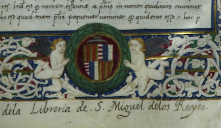
Another version of the same can be found in a further manuscript from Giovanni’s library, a copy of Porphyry, Isagoge ad cathegorias Aristotelis, with other Latin texts of Aristotle and Gilbertus Porreta, dated by Haffner to around 1473 (Haffner 1997, 224–7), surviving as Paris, Bibliothèque nationale de France, MS lat. 6292, and reproduced here as Figure 7.
Figure 7. Paris, Bibliothèque nationale de France, MS lat. 6292, fol. 1r (detail)
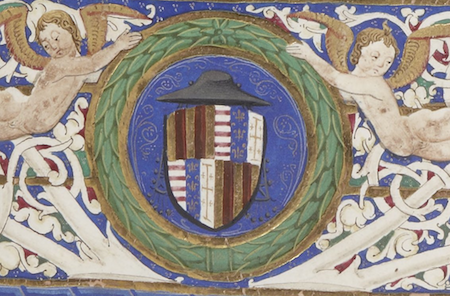
It is clear from these two images that, compared with the elaborate fiocchi of the cardinal’s emblem, any equivalent decoration of the prothonotary’s hat was minimal or non-existent. Returning once again to the show-through on fol. 1 verso of V, it is not impossible to discern a slight contour in the staining of the overpainted area above the escutcheon that might well indicate the ghost of the shape of such a prothonotary’s hat, and the colouring of the stain is certainly at least consistent with the notion that this could indeed have been the underlying depiction. (We are hoping that the application of new photographic technologies will be permitted in the near future, to help elucidate this feature.) Figure 8 shows an enlarged detail of the relevant portion of the whole image given above as Figure 5.
Figure 8. Valencia, Universitat de València, Biblioteca Històrica, MS 835, fol. 2v (detail).
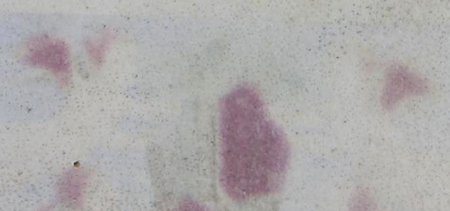
By way of further comparison and consolidation of this suggestion, it is useful to look at one or two examples of manuscripts in which overpainting has again occurred, but with definite indication of the underlying image having been that of the cardinal’s hat. (It is often not entirely clear why this has occurred – there are quite a number of instances recorded – but a likely explanation in at least some cases must have been the desire to ensure continued Aragonese royal ownership, perhaps often reverting to the king himself, after Giovanni’s unexpectedly early death in 1485.) An instance of this can be found in Valencia MS 389, a fine copy of Aulus Gellius, Noctes Atticae, probably from the early 1480s, whose frontispiece can again be attributed to Nardo Rapicano (note especially the facial characteristics of the putti, very similar to those of V). Here (Figure 9) it is very clear from the overpainting, the pigment alterations and disturbance to the original design, that the hat underlying the crown was also accompanied by fiocchi hanging down into the space separating the heads of the two middle putti: there can be little doubt that in this case Haffner’s identification of an original cardinal’s hat (Haffner 1997, 271–6) is correct.
Figure 9. Valencia, Universitat de València, Biblioteca Històrica, MS 389, fol. 1r (detail)
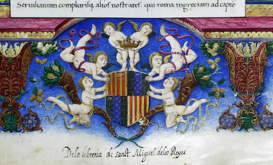
Similarly, a copy of Thomas Aquinas, Summa theologica: Prima secunda, dated 1484 and surviving as Valencia MS 395, clearly shows a ghosting of the knotted tassles of the fiocchi beneath the overpainted blue ground, even though only a tiny portion of the original brim of the hat is discernible to the immediate left of the crown (Figure 10). The main scribe of this manuscript was in fact Venceslaus Crispus, who was responsible for V, though in the case of Valencia MS 395 the illumination has been attributed by Toscano to Cristoforo Majorana, rather than the Rapicano family (Toscano 1998, 610).
Figure 10. Valencia, Universitat de València, Biblioteca Històrica, MS 395, fol. 2r (detail)
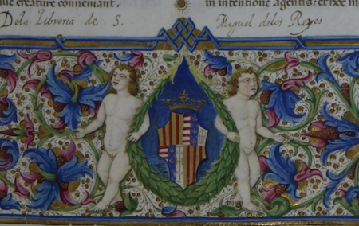
And finally, an example of a different kind of treatment of the redundant or outdated cardinal’s emblem. Paris, Bibliothèque nationale de France, MS lat. 8016 (Ovid, Metamorphoses, from around 1483) shows a process of erasure rather than overpainting; but here, once again, it is clear that both hat and fiocchi were jointly present in the manuscript’s original state, extending down each side of the armorial shield into the bottom spaces under the feet of the putti (Figure 11). Haffner additionally reports that upon physical inspection with a light source, the red hat and fiocchi are still visible (Haffner 1997, 232), though no sign of these is apparent as show-through on the following verso, at least as discernible in the facsimiles available from the library’s online Gallica resource (http://gallica.bnf.fr/ark:/12148/btv1b8452774s.r=8016).
Figure 11. Paris, Bibliothèque nationale de France, MS lat. 8016, fol. 1r (detail)
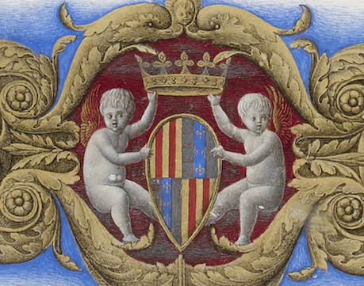
We have to ask, however, at this point: is there any other heraldic device, beyond the possibilities of the cardinal’s or prothonotary’s hat, that could have been placed originally above the frontispiece shield of V? In the context of late fifteenth-century Neapolitan royal manuscripts, there is really only one further candidate that merits consideration. This concerns not Giovanni, nor Beatrice, but another son of Ferrante, Alfonso (1448–1495), destined to become King Alfonso II after Ferrante’s death in 1494. As Ferrante’s first-born son, Alfonso carried the title Duke of Calabria, and as such he bore arms proper to that title. The principal device associated with this was a ringed, studded coronet, which clearly occurs in the decoration of a number of manuscripts from Alfonso’s own collection. Moreover, as a particularly energetic and generous cultural patron, with credentials for, and apparently genuine personal interests in, the support of the Neapolitan court’s literary, artistic and architectural ambitions (see especially Hersey 1969), it would not be difficult to weave an argument in favour of Alfonso as a likely commissioner of V. In turn, it might have been seen as relevant, in such a context, that the two eulogies to Tinctoris and his work, written by the Olivetan monk Fortunatus of Ferrara, which book-end the main contents of V, and which will be the subject of a separate essay within this online project, could be indirectly associated with Alfonso, since it is known that the main Olivetan church in Naples, Santa Maria de Monte Oliveto (now Sant’Anna dei Lombardi) was particularly favoured by the prince (Hersey 1969, 109–10). However, closer iconographical investigation of the manuscripts associated with Alfonso (see, for instance, Toscano 1998, esp. 251–76 and associated Plates; also De Marinis 1947–69) suggests very strongly that the coronet was depicted only in association with the personal arms of the Duke of Calabria, quartered into Aragonese pali (2 and 3, or 1 and 4) and large cross of Jerusalem on a grey ground (1 and 4, or 2 and 3 respectively). Whilst some of Alfonso’s manuscripts do carry the more general, full Aragonese royal arms, such as we have seen throughout the present essay, these are always accompanied by the surmounted crown, not the coronet. (I have found one example of the coronet with normal Aragonese arms (Valencia MS 132: Pauli Paladini Pharii apud Tarentum habita oratio, c. 1496), but as a book dedicated to Federico, Duke of Calabria after Ferrante’s and Alfonso’s deaths, this belongs to a later generation of the Dukedom, and seems to represent a new heraldic convention.) The arms of Alfonso as Duke of Calabria, with surmounted coronet, can be seen in Figures 12 and 13 (Paris, Bibliothèque nationale de France, MS lat. 8533: [part 1] Cicero, Epistolae ad familiares; [part 2] Cicero, Epistulae ad Brutum; ad Quintum fratrem; ad Atticum); it is clear that these arms cannot in any way be confused with the surviving (original) armorial shield of V.
Figure 12. Paris, Bibliothèque nationale de France, MS lat. 8533 (part 1), fol. 1r (detail)
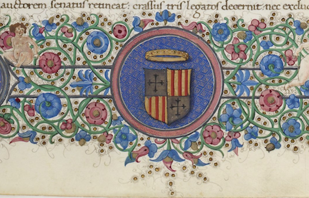
Figure 13. Paris, Bibliothèque nationale de France, MS lat. 8533 (part 2), fol. 1r (detail)
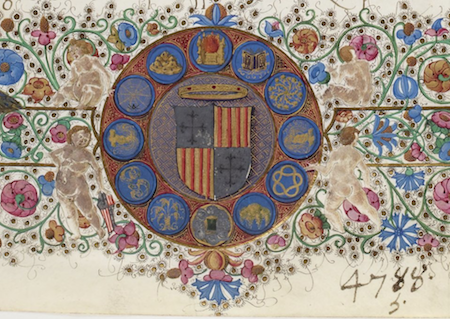
The cumulative evidence here indicates that it is all but inconceivable that the arms of V ever displayed fiocchi hanging down either side of the armorial shield; in consequence, it is extremely unlikely that the present five-pointed lily crown was painted over a red cardinal’s hat. It is, however, entirely plausible – especially bearing in mind the particular design of Aragonese arms depicted on the shield, the nature of the show-through, and the fact that the existing decorative golden ribbons are clearly original – that the overpainted image was rather that of a grey prothonotary’s hat. If this is the case, the implications for the dating of V are rather interesting. For, in terms of the actual music-theoretical content of the manuscript, we should recall that V includes the full text of the Liber de arte contrapuncti (fols. 77v–144), which we are told, in the version of the explicit recorded uniquely in Brussels, Bibliothèque royale, MS II 4147, fol. 101ra, was completed on 11 October 1477 (‘Liber tercius et ultimus de arte contrapuncti feliciter explicit Quem totum magister ioannes tinctoris (Ut prefertur) iurisconsultus atque musicus illustrissimi regis sicilie capellanus, neapoli incepit absolvitque Anno domini 1477o. mensis octobris die Undecima | Deum orate pro eo’: see Figure 14).
Figure 14. Brussels, Bibliothèque royale, MS II 4147, fol. 101ra (detail)
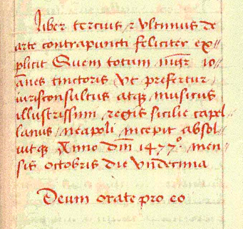
As we have seen, Giovanni d’Aragona was created cardinal (more precisely, cardinal deacon of S. Adriano in Foro in Rome) in the consistory of 10 December 1477, although the special embassy from Sixtus IV to present him with the red hat did not take place until 25 January 1478 in Naples Cathedral, the presentation being made by the Bishop of Aversa (Pàsztor 1961). The close proximity – a mere two months apart, almost to the day – of the completion date of De arte contrapuncti (the accuracy of which we have no reason to doubt or dispute) and the formal appointment of Giovanni to the cardinalate must surely give a clue as the reason for the suggested overpainting in the arms of V. The manuscript must have been commissioned, planned in both principle and detail, and its execution commenced, very soon after – or even, indeed, some time before – the completion of the counterpoint treatise in October 1477, destined primarily for the collection of Giovanni d’Aragona while he was still prothonotary apostolic. Then, at some point after news of the cardinalate broke – it is simply not possible to say how soon or long after – the heraldic inaccuracy led to the alterations that we see in the manuscript today. The change of emblem from prothonotary’s hat to five-pointed crown does not of itself indicate that the manuscript had necessarily left Giovanni’s collection for Ferrante’s library – other manuscripts attest to its use by Giovanni as a valid alternative – though such a transfer may indeed have eventually taken place after Giovanni’s premature death in 1485.
This proposed revision of the dating and origins of V,
then, to a period between the last few months of 1477 and the
first few of 1478 suggests a musicological significance that
goes some way beyond the simple fact of the handful of years
separating Haffner’s previously proposed date of around 1483
from the manuscript’s more likely, earlier date of
execution. For, simply put, it becomes the earliest datable
source for the main corpus of Tinctoris’s pedagogical
treatises. There are still, nevertheless, many paths of
investigation open, and the case presented in this essay can
hardly be regarded yet as definitive. If future research, for instance, can demonstrate that Alfonso's arms, while he was Duke of Calabria, did sometimes combine the coronet with the full Aragonese escutcheon as seen in V, as an alternative to the escutcheon proper to the Dukedom, the question of attribution to him rather than Giovanni should certainly be reopened. Particularly relevant to
our new online edition of the Tinctoris treatises will be the detailed
textual relationships between, especially, V and the two
other central sources, Brussels, Bibliothèque royale, MS II 4147
(Br1) and Bologna, Biblioteca Universitaria, MS 2573
(Bu), the latter an especially acute issue since it was
copied by the same scribe as V, Venceslaus Crispus,
though its precise dating, and its palaeographical and
contextual relationship with V, have yet to be fully
explored. But the historical and textual relationship
between V and Br1 is no less fascinating as a
result of this suggested revision of date. It has generally been
presumed, including by the present writer
(e.g. Woodley
1982
and Woodley
2011) that Br1 preceded V by some years during
the 1480s; but this may turn out not to be the case, since it
seems that the ink was, as it were, barely dry on the Liber de
arte contrapuncti in 1477 before the preparation of V was
under way, and although it is
As these and other strands of our research become gradually teased apart, we are intending to continue this series of short, focused essays within the project website, as a means of rapidly disseminating our thinking as it evolves, as well as stimulating wider musicological discussion through our blog and, when it becomes available, the user forum, accessed here from the project home page.
December 2013